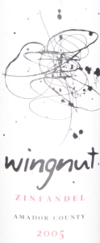

|
North America >
USA >
California >
Amador County >
Wingnut >
Zinfandel Amador County

2005 Zinfandel Amador County
Wingnut
St. Helena, CA
Vinted and bottled by Rebel Wine.
Price: $13
13.9% alcohol
750 ml

2012 tasting - Purple colored, this Zinfandel has a dry bouquet. The flavor is tart and the finish is jammy.
2011 tasting - A light red with some sediment, this Zin has a sweet, dry bouquet evocative of the
mountain terroir coupled to a sweet, excellent flavor and a dry, chewy finish.
2010 tasting - A light red with an excellent, chewy, fruity bouquet coupled to a flavor that knocks you out with incredibleness.
Some sediment has formed, but the wine has aged very well. It is dry and chewy with a velvet mouthfeel and slow, long finish.
2009 tasting - A light red, this Zin has a strong, intensely fruity bouquet with hints of butter. The flavor is light, sensual and
developing into a long, buttery aftertaste. Evidence of the mountain terroir presents a strong undercurrent throughout the experience.
2008 tasting - This Zin has an excellent, jammy, tart, complex bouquet for a dark, transparent red. The flavor is dry and very chewy with a
finish strongly reminiscent of mountain soil.
More about Zinfandel.
|